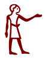

|
Egyptology Resources Bulletin Board |
|  |
Requests for information 2002 |
31/12/2002: Armant
I'm searching for some depictions of the Temple of Montu and the Bucheum at Hermonthis/Armant. Sketches, photographs -- anything! I have found images of Montu's temples (or what's left of them) in Karnak, Tod and Medamud, but nothing from Armant. If anyone could provide me with the title of a book, or better still, a web address, where such pictures could be found, I would be very grateful. Also, has anything built by Montuhotep II (Nebhepetra) survived even partially, aside from his mortuary temple at Deir el-Bahri?
Thanks in advance,
Jessica E. Goodwin
Aridawnia@aol.com
2/12/2002: Ancient Egypt in film
I am a third year degree student and I am writing my dissertation on the representation of ancient Egyptian civilisation in contemporary film, and am looking for primary sources of information and opinions. if you have any film suggestions that I may have overlooked (from the last ten years please) or have any strong opinions on films such as the Mummy, Mummy Returns and Stargate I would very much appreciate hearing from you. Thank you very much for your help!
Kate Foster kate_egypt@hotmail.com
2/12/2002: Dentistry
I am writing my doctor's thesis about Dentistry in Ancient Egypt. But it is really hard to find articles, books, publications about that subject. Can anybody help me to find places where I can get more information?
Thank you
Daniela Staar
staar@eresmas.net
25/09/2002: Ahmose and Seqenenre
I am an author seeking a couple of facts/theories:
1) Regarding the mummies found at the Deir el-Bahri cache: Is there any known theory on how Ahmose I died?
2) On the court of Seqenenre II: How might I find the names or a possible resource for one or two of Seqenenre's most influential, non-military advisors?
Sincere thanks.
Holly Smith
Roanoke, Va.
proserose@cox.net
3/07/2002: FW Green
I am undertaking a college project on the egyptologist Frederick William Green (1869 - 1949) and would be grateful for any suggestions on resources, books etc (other than the diaries at the British Museum and the papers at Cambridge). I have trawled the net and the local library but found very little. Any help appreciated.
Amanda Orchard MBA AIMgt ACIM
School of Art & Design
Staffordshire University
email: a.j.o@tesco.net
3/06/2002: Tomb 55
My name is and I am currently working on a school essay (2500 Words) about Tomb 55 in the Valley of the Kings, Egypt. I am researching theories about who the mummy in the tomb is. What I am interested in knowing is age at death, gender, and identity in general. I have 3 main theories so far :-
1) Mummy is Akhenaten and aged 35- 37 years at death, as thought by Professor James Harris and Professor Fawzia Hussein in 1988. Their study was never published however.
2) Mummy is Queen Tiye and very old at death, as thought by Theodore Davis upon discovery,
3) Mummy is Smenkhkare, aged 20ish at death and was a male coregent for a few years before Akhenaten died. He then ruled for 2 or 3 years before also dying and being succeeded by Tutankhamun who he was father or brother to.
I would love to get a hold of Theodore Davis publication from 1910 if anybody has a copy.!!
Any new ideas or theories would be great and very much appreciated!!! Thank you!!!
Please contact me if you have any information or opinions to offer!! Thank you!!
Leanne Riek
leanneriek@hotmail.com
2/05/2002: India and Egypt
If you have any citations discussing any kind of links (or lack of) between Egypt and India, both ancient and pre-historic, please e-mail me. Thanks,
Malcolm Dean
malcolmdean@earthlink.net.
23/04/2002: Menit
I am currently doing research on symbols associated with Hathor and have not been able to locate a clear picture of the "Joy and Pleasure" design said to be on the back of her neck.
Any help would be appreciated.
Linni Foye
Linniangelique@hotmail.com
[I think she is referring to the menit, NCS]
10/04/2002: Star images
I am currently researching the genealogy of the star image, starting with ancient mythology. What better place to start than with the Egyptians. any information or links will be gratefuly accepted,
especially concerning the constellation of Orion. Please reply to I.M.Barr@ncl.ac.uk
Ian Barr
04/04/2002: A terminological question
There is a specific term for when sick people spent the night in the sanatorium of a god, specifically that of Hathor at Dendera hoping for curative sleep or dreams! I can't remember it or where I read about it. Can someone please help.
Thanks.
Pam Smith
pamcleesmith@hotmail.com
16/03/2002: Dogs
I am looking for any information about DOGS (hounds...) in Ancient Egypt:daily life, mythology, art, texts and philology, script, science, zoology...
Jean Brixhe
LIEGE, BELGIUM
jbrixhe@skynet.be
21/02/2002: Serpents and lamias
I am looking for any information about the serpent Sata (the serpent Sa-en-ta) in Egyptian mythology. Is there a good place to start, or can anyone tell me who this serpent is? Also, I would love to hear from anyone who has any inkling about the history of the lamia or its possible place in Egyptian folklore or mythology.
Thanks,
Debi Herbert
English Dept.
Henderson State University
Arkansas
email: puparooh@hotmail.com
Posts from 2001 will be found here
Posts from 2000 will be found here
Posts from 1999 will be found here
Unless otherwise indicated, © Nigel Strudwick 1994-2016